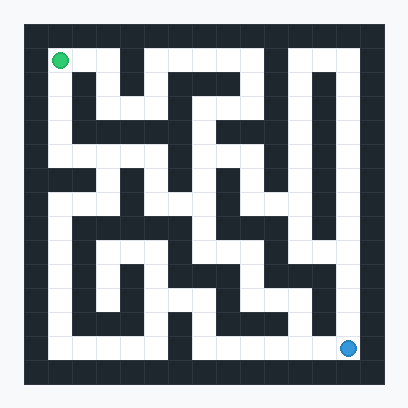
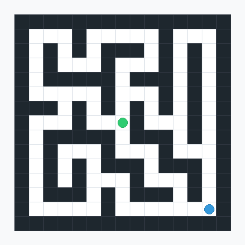
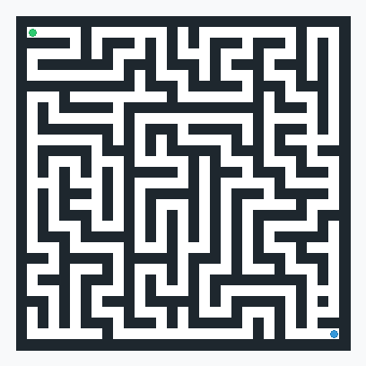

Breadth-First Search (BFS) explores a maze level by level, visiting all neighboring cells at the current distance before moving further away. In an unweighted maze, BFS is guaranteed to find the shortest path, though it requires more memory to store all visited states in a queue.

Every step in BFS goes:
Middle-Start Maze:

2× Dense Grid Maze:
